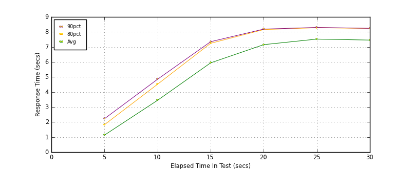
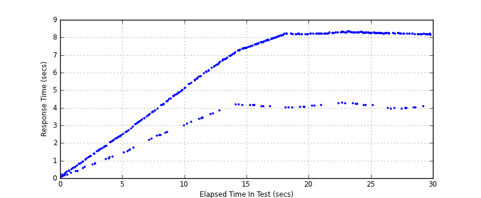
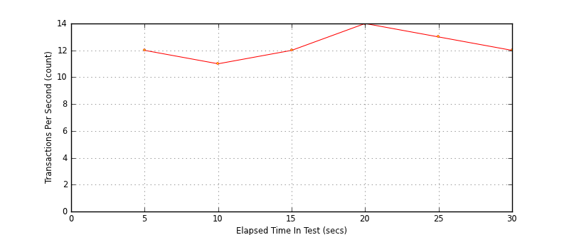
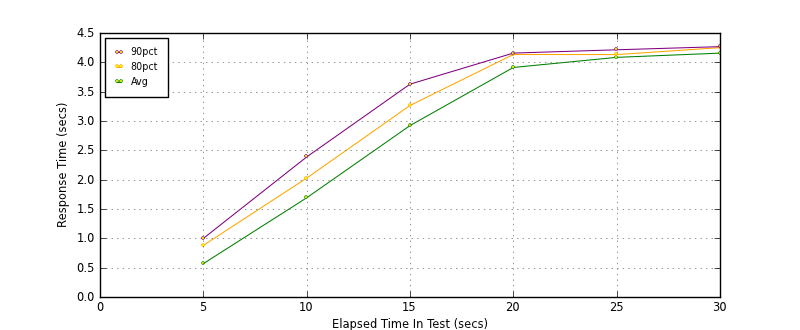
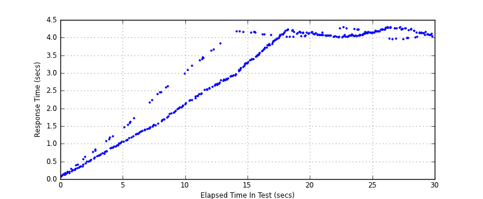
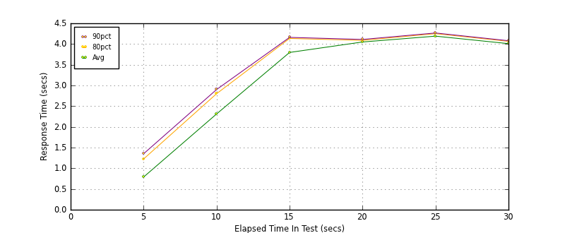
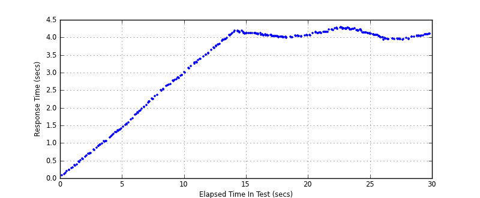
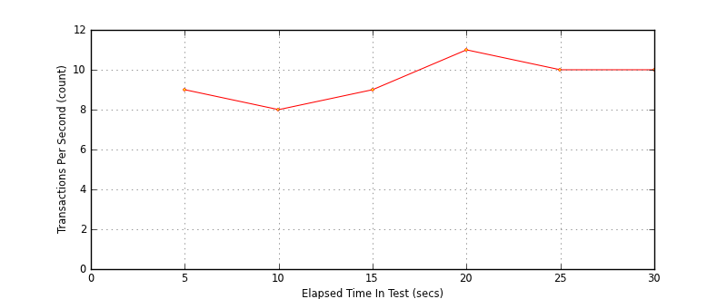

Performance Results Report
Summary
transactions: 478
errors: 389
run time: 30 secs
rampup: 10 secs
test start: 2014-01-16 12:58:45
test finish: 2014-01-16 12:59:15
time-series interval: 5 secs
workload configuration:
| group name | threads | script name |
|---|
| user_group-1 | 10 | read_user.py |
| user_group-2 | 90 | readwrite_user.py |
All Transactions
Transaction Response Summary (secs)
| count | min | avg | 80pct | 90pct | 95pct | max | stdev |
|---|
| 478 | 0.058 | 5.530 | 8.201 | 8.247 | 8.262 | 8.318 | 2.737 |
Interval Details (secs)
| interval | count | rate | min | avg | 80pct | 90pct | 95pct | max | stdev |
|---|
| 1 | 62 | 12.40 | 0.058 | 1.131 | 1.824 | 2.222 | 2.337 | 2.453 | 0.712 |
| 2 | 57 | 11.40 | 1.459 | 3.448 | 4.517 | 4.850 | 4.984 | 5.106 | 1.025 |
| 3 | 60 | 12.00 | 3.075 | 5.941 | 7.243 | 7.349 | 7.376 | 7.381 | 1.329 |
| 4 | 70 | 14.00 | 4.010 | 7.153 | 8.156 | 8.189 | 8.199 | 8.211 | 1.569 |
| 5 | 67 | 13.40 | 4.105 | 7.522 | 8.280 | 8.300 | 8.306 | 8.318 | 1.568 |
| 6 | 62 | 12.40 | 3.939 | 7.457 | 8.230 | 8.239 | 8.249 | 8.262 | 1.620 |
Graphs
Response Time: 5 sec time-series

Response Time: raw data (all points)

Throughput: 5 sec time-series

Custom Timer: get_tweets
Timer Summary (secs)
| count | min | avg | 80pct | 90pct | 95pct | max | stdev |
|---|
| 378 | 0.057 | 2.942 | 4.127 | 4.196 | 4.235 | 4.289 | 1.382 |
Interval Details (secs)
| interval | count | rate | min | avg | 80pct | 90pct | 95pct | max | stdev |
|---|
| 1 | 62 | 12.40 | 0.057 | 0.569 | 0.880 | 0.999 | 1.068 | 1.199 | 0.321 |
| 2 | 57 | 11.40 | 1.043 | 1.691 | 2.026 | 2.387 | 2.581 | 2.981 | 0.437 |
| 3 | 60 | 12.00 | 2.137 | 2.922 | 3.265 | 3.628 | 4.148 | 4.169 | 0.488 |
| 4 | 70 | 14.00 | 3.295 | 3.913 | 4.134 | 4.158 | 4.196 | 4.220 | 0.266 |
| 5 | 67 | 13.40 | 3.991 | 4.085 | 4.132 | 4.214 | 4.234 | 4.289 | 0.068 |
| 6 | 62 | 12.40 | 3.939 | 4.157 | 4.251 | 4.267 | 4.275 | 4.286 | 0.099 |
Graphs
Response Time: 5 sec time-series

Response Time: raw data (all points)

Throughput: 5 sec time-series
Custom Timer: post_tweet
Timer Summary (secs)
| count | min | avg | 80pct | 90pct | 95pct | max | stdev |
|---|
| 299 | 0.075 | 3.270 | 4.121 | 4.188 | 4.237 | 4.287 | 1.252 |
Interval Details (secs)
| interval | count | rate | min | avg | 80pct | 90pct | 95pct | max | stdev |
|---|
| 1 | 46 | 9.20 | 0.075 | 0.789 | 1.225 | 1.350 | 1.379 | 1.458 | 0.412 |
| 2 | 44 | 8.80 | 1.511 | 2.311 | 2.801 | 2.901 | 2.931 | 3.005 | 0.464 |
| 3 | 48 | 9.60 | 3.115 | 3.796 | 4.134 | 4.160 | 4.181 | 4.191 | 0.347 |
| 4 | 57 | 11.40 | 3.980 | 4.049 | 4.088 | 4.110 | 4.120 | 4.123 | 0.039 |
| 5 | 54 | 10.80 | 4.103 | 4.190 | 4.250 | 4.266 | 4.276 | 4.287 | 0.057 |
| 6 | 50 | 10.00 | 3.936 | 4.009 | 4.064 | 4.079 | 4.091 | 4.096 | 0.052 |
Graphs
Response Time: 5 sec time-series

Response Time: raw data (all points)

Throughput: 5 sec time-series
